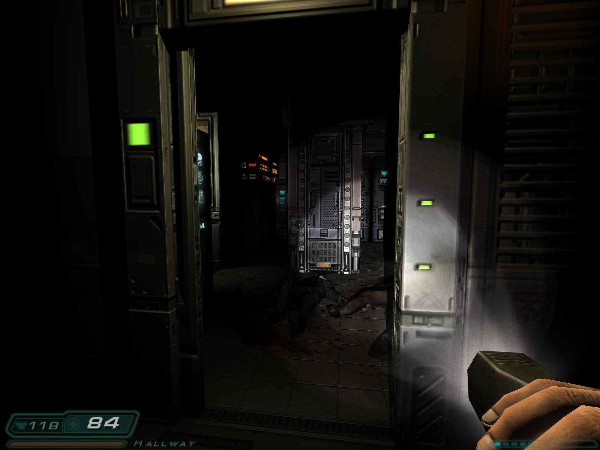

25-Jan-25

The Michelin crew decided to put this place in the Guide even though it only opened in September. Plus, Japanese food: yes, please. So off we went. Parking, as usual in Moseley, was a bit of a nightmare. Yes, we drove. Because it’s Dry January.
Anyway, we eventually parked up and ordered some rather lovely mocktails (sigh). The decor was DARK and STARK, but I liked it. Totally different from Carters, which used to occupy the same space.
Then, onto the seven course tasting menu. The sushi was nice but not “shit me” nice, and this was followed by miso soup. I am not a soup person, and this didn’t change my mind. Luckily we then got four servings of haxoramicus in a row: prawn and vegetable tempura (yes), karate (yes, yes!), scallops (yes please - but preferably more of it), and duck breast (YES! Also, served with ‘mooli’ - never had that before). They probably should have stopped there, as the final main (lamb cutlet) was a bit of an anticlimax. Desert was excellent though - a “baked Mount Fuji”, covered in flaming Japanese whisky.
We were rather spoiled in December, visiting both Opheem on Summer Row (1 star) and 670 Grams in the Custard Factory (0 stars but surely getting one soon?). Two of the best meals I’ve had in, well, ever, so Satori was going to struggle by comparison. Regardless, we had a lovely evening, that I somehow came away from sober.
17-Jan-25
I played this on my Mac Mini M2 (the ultimate* gaming machine). But how? While it did originally have a native Mac release, that 32-bit version won’t work on modern Macs. In any event, GoG only sell the Windows version. Luckily, the superb dhewm3 source port came to the rescue. Using this, it should be a doddle to set up on just about any OS you can think of (even FreeBSD, apparently).
Note that dhwem3 recreates the original 2004 edition (yes, this game is over 20 years old), not the later BFG release. Which is just as well, because if you ask me, the BFG version kinda missed the point. Doom 3 is a horror game, using John Carmack’s fancy id Tech 4 to great effect. You know, dark dark dark OH MY GOD A MONSTER dark dark dark. Paranoid glimpses of unknown horrors in the eerie shadows and dark corners. That sort of thing. Here come’s the science part: “The key advance of the id Tech 4 graphics engine developed for Doom 3 is the unified lighting and shadowing. Rather than computing or rendering lightmaps during map creation and saving that information in the map data, most light sources are computed in real-time” (thanks, Wikipedia).
In BFG not only can you can attach your torch to your gun (rather than having to put the torch away when aiming your gun), lighting everything in front of you up perfectly, but they actually upped the base brightness of the entire game, rendering the whole thing about 50-75% less scary. Without the jump scares, it just becomes a bit of a bland shooter. But anyway, why am I moaning about that? I played the original version! The verdict? Scary fun, although it does outstay its welcome a bit. Probably could have been about two thirds of the length, as it does get a tad repetitive. Most of the levels look basically the same (claustrophobic industrial interiors). Quite a stark contrast to the openness and variety of Half Life 2, which, amazingly, came out later the same year. But yes, Doom 3 was nonetheless fun to revisit. It reawakened happy memories of playing it in the summer holidays at the end of my first year at university. What a time that was. What a time to be alive.
This game also serves as a reminder of just how fast tech moved on back in those days. As I said, this game is now over 20 years old, but still looks pretty good (fine, it won’t pass for a 2025 game, but come on), whereas Doom 2 was only just about to hit its 10th anniversary when this came out. Crazy. Crazy, I tell you.

Last updated: 27 January 2025 (last update: a nice Doom 3 screenshot) | What a shame